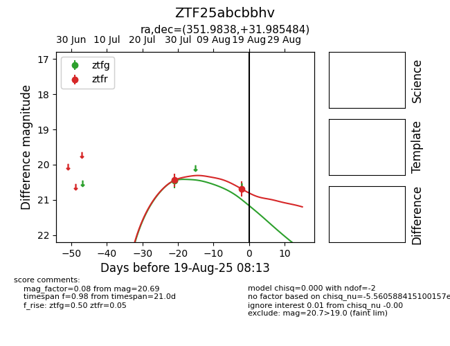

Target ZTF25abcbbhv at 2025-08-19 08:13, see:
FINK: fink-portal.org/ZTF25abcbbhv
Lasair: lasair-ztf.lsst.ac.uk/objects/ZTF25abcbbhv
ALeRCE: alerce.online/object/ZTF25abcbbhv
alt names
ZTF25abcbbhv (ztf,fink)
coordinates:
equatorial (ra, dec) = (351.9838,+31.98548)
galactic (l, b) = (102.9849,-27.63147)
photometry
last ztfg=20.45, ztfr=20.69
1 ztfg, 2 ztfr detections
